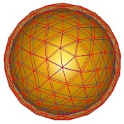
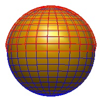

Cover layers
The cover layer class allows adding a thin cover layer to a particle boundary. Such layers can be used for the simulation of effect such as contamination in electron microscopy, as well as for the emulation of nonlocal dielectric functions through a thin, artificial cover layer with local dielectric properties.
Contents
Setting up cover layers
A cover layer object is usually created by displacing the vertices of a given particle object p1 along the directions of the outer surface normals
% set up cover layer object by displacing boundary of particle P1 along % directions of outer surface by distance D p2 = coverlayer.shift( p1, d ); % additionally provide shift directions at vertices p2 = coverlayer.shift( p1, d, 'nvec', nvec );
In the above calls the input arguments are
- p1 particle boundary that is used as template for cover layer,
- d distance along which vertices of cover layer are shifted (d can also be a vector if different shift distances are required),
- nvec are the outer surface-normal directions along which vertices are shifted.
Simulations with cover layers
Simulations with cover layers are performed in completely the same way as for normal particles. The only difference is that for closely spaced cover layers one has to be careful with the Green function integration over neighbour boundary elements. One can pass an additonal argument 'refun' to the BEM solvers to perform the integration over twin boundary elements in polar coordinates
% use sufficiently large value for 'npol' for accurate interation over % neighbour boundary elements op = bemoptions( op, 'npol', 20 ); % initialize BEM solver with refined integration over twin boundary % elements of the shifted cover layer bem = bemsolver( p, op, 'refun', coverlayer.refine( p, [ 1, 2 ] ) );
The array [1,2] corresponds to the boundaries of the comparticle object, where one is created by displacing the vertices of the other one. One should check the convergence of the simulations by verifying that the simulation results do not change significantly with npol.
Examples
Consider a gold nanosphere that is covered by a thin layer
% dielectric functions of embedding medium, gold, and cover layer epstab = { epsconst( 1 ), epstable( 'gold.dat' ), epsconst( 4 ) }; % gold nanosphere with a diameter of 10 nm p1 = trisphere( 144, 10 ); % cover layer with a thickness of 0.5 nm p2 = coverlayer.shift( p1, 0.5 ); % make COMPARTICLE object p = comparticle( epstab, { p1, p2 }, [ 2, 3; 3, 1 ], 1, 2, op ); % plot particles plot( p1, 'EdgeColor', 'b' ); plot( p2, 'EdgeColor', 'r', 'FaceAlpha', 0.5 );

As another example, we consider the situation where only the upper half of a sphere is covered with an additional material. To this end, we create a nanosphere and split it into upper and lower parts, find the boundary of the upper particle, and add a cover layer over it.
% nanosphere, split into upper and lower part p = trispheresegment( linspace( 0, 2 * pi, 25 ), linspace( 0, pi, 21 ), 10 ); [ pup, plo ] = select( p, 'carfun', @( x, y, z ) z > 0 ); % border of upper part net = border( pup ); % distance array, set distances at border to zero d = 0.25 * ones( p.nverts, 1 ); d( unique( net( : ) ) ) = 0; % shift boundary for creation of cover layer pcover = coverlayer.shift( pup, d ); % plot particles plot( p, 'EdgeColor', 'b' ); plot( pcover, 'EdgeColor', 'r', 'FaceAlpha', 0.5 );

Simulations using nonlocality
Cover layers can be also used for the simulation of nonlocal dielectric functions. Following the proposal of the Pendry group, Yu Luo et al., PRL 111, 093901 (2013), the effect of a nonlocal Drude-type dielectric function can be emulated by adding a thin artificial layer with a local permittivity over a Drude-type metal with a local permittivity. The permittivity  of the artificial layer of thickness
of the artificial layer of thickness  is given by
is given by

Here  is the Drude-type local permittivity of the metal, with plasma frequency
is the Drude-type local permittivity of the metal, with plasma frequency  , damping rate
, damping rate  , and ionic background dielectric constant
, and ionic background dielectric constant  .
.  is the longitudinal plasmon wavenumber,
is the longitudinal plasmon wavenumber,  an effective velocity, and
an effective velocity, and  the dielectric constant of the embedding medium. As discussed in the paper of Luo et al., the model works best for extremely small layer thicknesses .
the dielectric constant of the embedding medium. As discussed in the paper of Luo et al., the model works best for extremely small layer thicknesses .
In our toolbox, this nonlocal model can be implemented as follows
% thickness of artificial layer d = 0.05; % longitudinal plasmon wavenumber, see Yu Luo et al., PRL 111, 093901 (2013). units; ql = @( w ) 2 * pi * sqrt( 3.3 ^ 2 - w .* ( w + 1i * 0.165 ) ) / ( 0.0036 * eV2nm ); % table of dielectric functions % eps1 - dielectric constant of embedding medium % eps2 - Drude-type dielectric function representative for gold % eps3 - artificial permittivity according to description of Luo et al. eps1 = epsconst( 1 ); eps2 = epsfun( @( w ) 1 - 3.3 ^ 2 ./ ( w .* ( w + 1i * 0.165 ) ), 'eV' ); eps3 = epsfun( @( enei ) eps2( enei ) .* eps1( enei ) ./ ... ( eps2( enei ) - eps1( enei ) ) .* ql( eV2nm ./ enei ) * d ); epstab = { eps1, eps2, eps3 }; % diameter of sphere diameter = 10; % initialize spheres p2 = trisphere( 144, diameter - d ); p1 = coverlayer.shift( p2, d ); % make COMPARTICLE object p = comparticle( epstab, { p1, p2 }, [ 3, 1; 2, 3 ], 1, 2, op ); % set up BEM solver bem = bemsolver( p, op, 'refun', coverlayer.refine( p, [ 1, 2 ] ) );
The rest of the simulation is in complete analogy to normal BEM simulations. In the example section we provide the full code for nonlocal simulations for single and coupled nanospheres.
Copyright 2017 Ulrich Hohenester